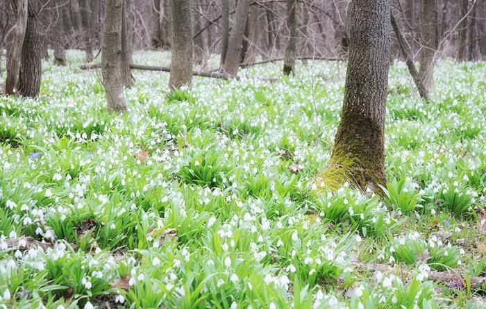
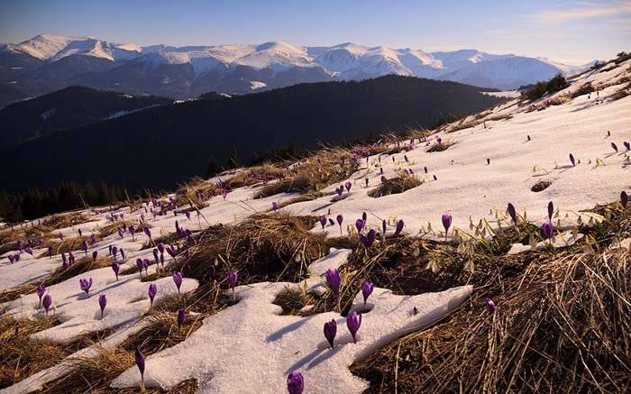

Первоцвіти
Мабуть, найбільше першому весняному сонечку радіють проліски. Саме ці тендітні квіти вперто пробивають снігові покриви, аби поніжитись у його несміливих променях. Ну, а якщо не зацвіте підсніжник, то, певно, і весна не настане.
Побачити цвітіння цих запаморочливо красивих і ароматних квітів в Україні можна в Ічнянському національному парку, неподалік села Ічня, що на Чернігівщині. Однак похвалитися густими килимами первоцвітів можуть і карпатські полонини, хоч не кожен зважиться підкорювати засніжені схили у перші, ще холодні весняні дні.
Крокуси
Ще не встигне зійти сніг у Карпатах, а фіолетові квіти Шафрану Гейфеля вже тягнуть свої пелюстки до сонечка. Крокуси люблять рости на височині, під самим небом, тому не дивно, що насолодитися цими квітами можна на схилах гір Драгобрат та Петрос Рахівського району Закарпатської області.
А якщо підніматися високо в гори немає бажання, помилуватися крокусами Ти зможеш у селі Колочава Міжгірського району на Закарпатті, або в заповіднику «Медобори» на Тернопільщині. Березень або початок квітня — ідеальний для цього час.
Магнолії
Розкішні пелюстки магнолій ніби створені для того, щоб прикрасити картину відомого художника. Гріх не зробити селфі на тлі чарівних рожевих квітів, прогулюючись Одеським ботанічним садом або Національним ботанічним садом ім. М. Гришка у Києві.
Однак помилуватися чудесними краєвидами магнолій можна і просто на вулицях Житомира, Львова, Мукачева та Ужгорода. Ростуть вони і в Криму, і на Закарпатті.
Maecenas lacinia felis nec placerat sollicitudin. Quisque placerat dolor at scelerisque imperdiet. Phasellus tristique felis dolor.
Maecenas elementum in risus sed condimentum. Duis convallis ante ac tempus maximus. Fusce malesuada sed velit ut dictum. Morbi faucibus vitae orci at euismod. Integer auctor augue in erat vehicula, quis fermentum ex finibus.
Mauris pretium elit a dui pulvinar, in ornare sapien euismod. Nullam interdum nisl ante, id feugiat quam euismod commodo. Sed ultrices lectus ut iaculis rhoncus. Aenean non dignissim justo, at fermentum turpis. Sed molestie, ligula ut molestie ultrices, tellus ligula viverra neque, malesuada consectetur diam sapien volutpat risus.
Quisque eget tortor lobortis, facilisis metus eu, elementum est. Nunc sit amet erat quis ex convallis suscipit. ur ridiculus mus.
Maecenas elementum in risus sed condimentum. Duis convallis ante ac tempus maximus. Fusce malesuada sed velit ut dictum. Morbi faucibus vitae orci at euismod. Integer auctor augue in erat vehicula, quis fermentum ex finibus.
Mauris pretium elit a dui pulvinar, in ornare sapien euismod. Nullam interdum nisl ante, id feugiat quam euismod commodo. Sed ultrices lectus ut iaculis rhoncus. Aenean non dignissim justo, at fermentum turpis. Sed molestie, ligula ut molestie ultrices, tellus ligula viverra neque, malesuada consectetur diam sapien volutpat risus. Quisque eget tortor lobortis, facilisis metus eu, elementum est. Nunc sit amet erat quis ex convallis suscipit. ur ridiculus mus.